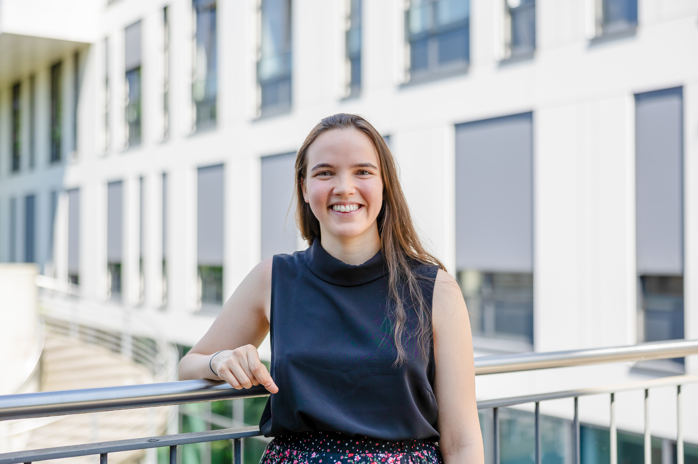

Cécile Gachet |
|  Photography credits: ©Michael Schwettmann |
I am Juniorprofessor for Algebraic Geometry at the Faculty of Mathematics at Ruhr-University Bochum. My research focus lies in birational geometry. Some of the objects and questions that I like to reflect on are:
|
Before coming to Bochum, I obtained my Ph.D. in February 2023 at Université Côte d'Azur, Laboratoire J.A. Dieudonné, Nice, France, under the supervision of Andreas Höring.
From May 2023 to September 2024, I worked as a postdoctoral fellow in the group led by Gavril Farkas at Humboldt-Universität zu Berlin, in a position partially funded by the ERC Advanced Grant SYZYGY: Syzgies, moduli and topological invariants of groups.